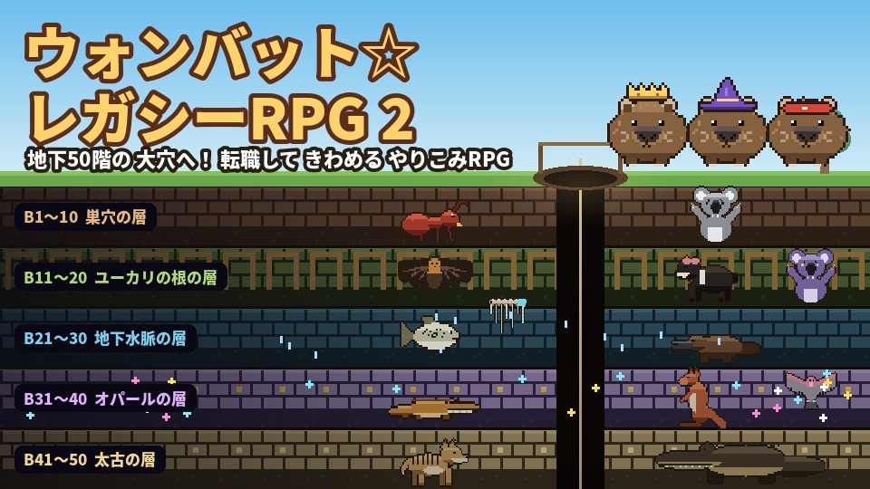

第2回 1/17（日） つくる
AIに
頼むコツ
設計図を、動くゲームにする
親子でAIゲームづくり講座
今日の流れ（120分）
ゴール：全組のゲームが動く
| 15分 | 動作確認 |
| 15分 | 講義：AIに頼むコツ |
| 75分 | 開発 |
| 15分 | 全組の動作確認と保存 |
はじめに（15分）
動作確認
- 会場のWi-Fiにつながる
- AIにログインできる
- 「こんにちは」に返事が来る
- 宿題のゲームが開ける
できなかったら、手を挙げてください
まず知っておくこと
使える量には、上限がある
たくさん使う
- 長い会話の続き
- 大きなファイル
- まるごと作り直し
だから
作り直しが少なくなる頼み方をする
止まったら、手を挙げてください
進め方
まず1つ、完成させる
よくある失敗
いきなり大作を目指す
→ 完成しない
おすすめ
シンプルに完成させる
→ 遊んでから考え直す
「そもそも」の見直しは、完成してから
進め方
複雑な要素は「続編」で

1作目：シンプルに
→

2作目：広げる
前のゲームを素材にして、別のゲームとして作る
コツ1 頼む前
肝だけ自分で決めて、あとは任せる
自分で決める
- 面白い点
- ぶらさない点
- 遊ぶ人・遊ぶ端末
任せる・提案させる
- 細かいルール
- 数値（速さ・点数）
- 見た目と演出
設計図が埋まらないところは「おまかせ」でいい
コツ2 頼むとき
基本形で頼み、質問させる
ローカルhtml完結のゲームを作りたい
（設計図の内容）
質問ある？
「質問には、おすすめ案も付けて」と頼む
コツ3 遊んで確かめる
面白さは、人が遊んで確かめる
| 最小版ができたら | 面白い？ 操作できる？ |
| 機能を足したら | 最後まで遊べる？ |
| 発表の前 | 発表の端末で動く？ |
コツ4 送るとき
何をまとめて送るか
設計を
変える話
単独で
追加・
変更
まとめて
OK
不具合・
数値
まとめて
OK
「やらないこと」も1行書く
コツ5 直しを頼むとき
何をしたら→何が起きて
→どうしたい
例：つみきドカーン！
「ボールが速すぎて、ねらえない。
最初はゆっくり落ちるようにしたい」
エラーは、画面の文をそのまま貼る
コツ6 仕上げ
見た目と演出は、最後にAIに任せる
1
AIに
「UIと演出を
良くして」
2
人が遊んでみる
3
気になるところを
細かく直す
それまでは、見た目を直さない
コツ7 詰まったら
引っ越すか、作り直すか
引っ越す
直しが3〜4回続いたら
→ 新しいチャットへ
作り直す
同じ不具合が
2回直らないとき
作り直しは、こわくない
開発（75分）
この順で進める
1
送る
2
答える
3
遊ぶ
4
まとめて
直す
③④をくり返す。動いたら手を挙げて！
開発中
困ったときは
| 止まった | 手を挙げる |
| 動かない | エラーを貼って「直して」 |
| 思っていたのと違う | 設計図を見直す |
| 意見が割れた | 遊ぶ人が決める |
最後の15分
第3回に、続きを持っていく
全員
HTMLファイルを
保存する
iPhoneのとき
開けなければ
AIの画面で遊ぶ
動くのを確かめて、「次に直したいこと」をメモ
次回
1/24（日）
なおす・みせる
家族に遊んでもらい、直したいことをメモ